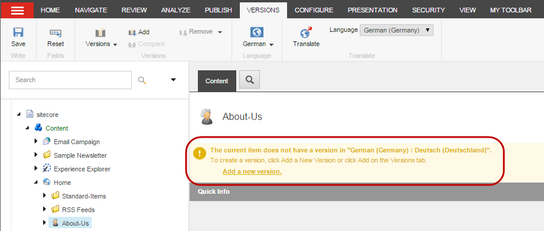

バージョン管理¶
コンテンツエディタやエクスペリエンスエディタでは、Sitecore内の任意のアイテムの新しいバージョンを追加することができ、好きなだけバージョンを追加することができます。
バージョンには2種類あります。
番号付きバージョン - 同じ言語のアイテムのバージョン。 例えば、商品ページの2つ目のバージョンを追加して、特別なプロモーションの際に使用することができます。また、画像の新しいバージョンを追加して、プロモーションに合わせて新しいバージョンを変更し、プロモーション後に元のバージョンに戻すこともできます。
言語バージョン - アイテムの異なる言語のバージョンです。 例えば、デンマーク語のアイテムの場合、同じアイテムの英語版を追加することができます。この場合、代替テキストを両方の言語で表示したい場合は、アイテムの画像のバージョンも追加する必要があります。
アイテムの番号付きバージョンを追加する¶
アイテムの新しい番号付きバージョンを追加するには
コンテンツ エディタまたはエクスペリエンス エディタで、新しいバージョンを追加するアイテムまたはページに移動します。
リボンの [バージョン] タブの [バージョン] グループで [追加] をクリックします。
{kind=link}
コンテンツ エディタでは、編集ペインの右上に、アイテムの最新のバージョン番号が表示されます。この例では、バージョン番号は2です。
注釈
アイテムの別バージョンを表示するには、バージョン番号のドロップダウンメニューをクリックして、別バージョンをクリックします。
エクスペリエンスエディタのバージョングループでは、バージョンボタンに現在のページのバージョン番号が表示されています。この例では、バージョン番号は2です。
{kind=link}
注釈
アイテムの別バージョンを表示するには、「バージョン」をクリックし、メニューから「別バージョン」をクリックします。
新しいバージョンに関連する変更を行い、変更内容を保存します。
アイテムの新しい言語バージョンを追加する¶
アイテムの新しい言語バージョンを追加するには
コンテンツ エディタまたはエクスペリエンス エディタで、言語バージョンを追加する項目またはページに移動します。
新しいバージョンの言語を選択するには、[バージョン] タブの [言語] グループで、[現在の言語を変更する ED8806B02C0044B0998698C695955ED6.png] をクリックしてから、該当する言語をクリックします。
注釈
必要な言語がドロップダウン リストにない場合は、[その他の言語] をクリックし、[言語の選択] ダイアログ ボックスで、該当する言語をクリックして [OK] をクリックします。
選択した言語でアイテムの新しいバージョンを追加するには

[コンテンツ エディタ] で、表示される通知で [新しいバージョンの追加] をクリックします。
{kind=link}
エクスペリエンス エディタの［バージョン］タブの［バージョン］グループで［追加］をクリックします。
変更を保存します。
アイテムのバージョンを削除する¶
アイテムのバージョンを削除するには
コンテンツ エディタまたはエクスペリエンス エディタで、削除するアイテムまたはページのバージョンに移動します。関連する言語と番号のついたバージョンを選択していることを確認してください。
削除するには
選択したアイテムのバージョン、リボン上のバージョンタブのバージョングループで、削除をクリックします。
現在の言語のアイテムのすべてのバージョンを削除するには、[削除] ドロップダウン矢印をクリックしてから、[すべてのバージョンを削除] をクリックします。
注釈
アイテムの言語バージョンが1つしかない場合、これはアイテム自体を削除するものではありません。その代わり、コンテンツエディタでは、アイテムに通知が表示され、利用可能なバージョンのアイテムがないことを知らせてくれます。エクスペリエンスエディタでは、バージョンボタンのバージョン番号がゼロに変わります。
{kind=link}